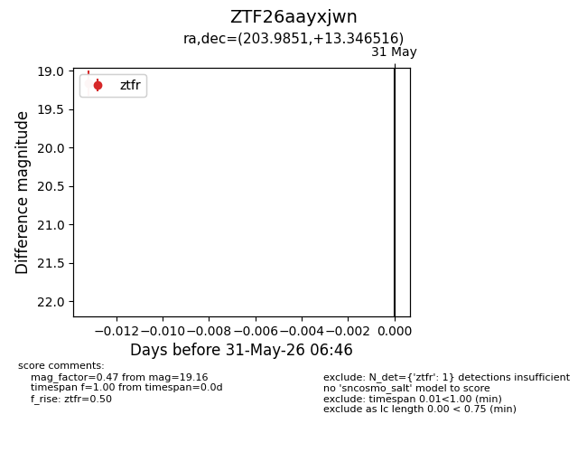
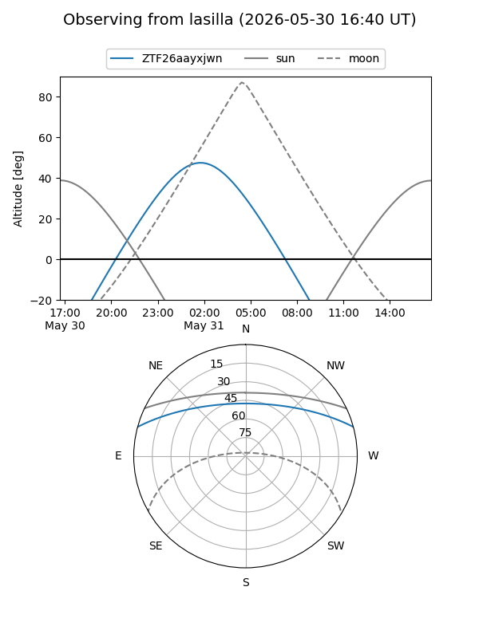
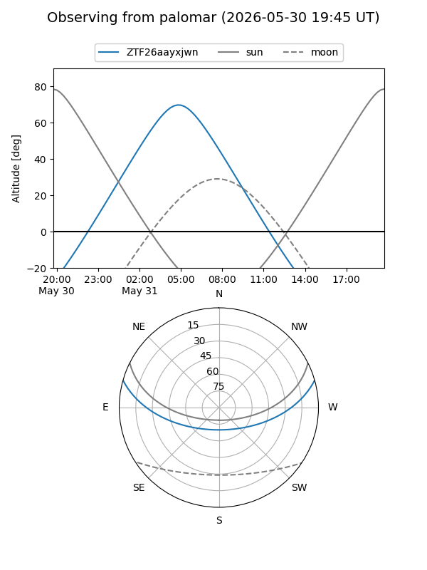

ZTF26aayxjwn
Target ZTF26aayxjwn at 2026-05-31 06:48
Aliases and brokers:
lsst-FINK: link
lsst-Lasair: link
lsst-ALeRCE: link
ztf-FINK: link
ztf-Lasair: link
ztf-ALeRCE: link
alt names
ZTF26aayxjwn (ztf,fink_ztf)
Coordinates:
equatorial (ra, dec) = 203.9851,+13.34652
equatorial (HMS+DMS) = 13:35:56.43,+13:20:47.46
galactic (l, b) = (342.1707,+72.73378)
Flags:
Photometry:
last ztfr=19.16
1 ztfr detections
Lightcurve

Visibility


Additional plots